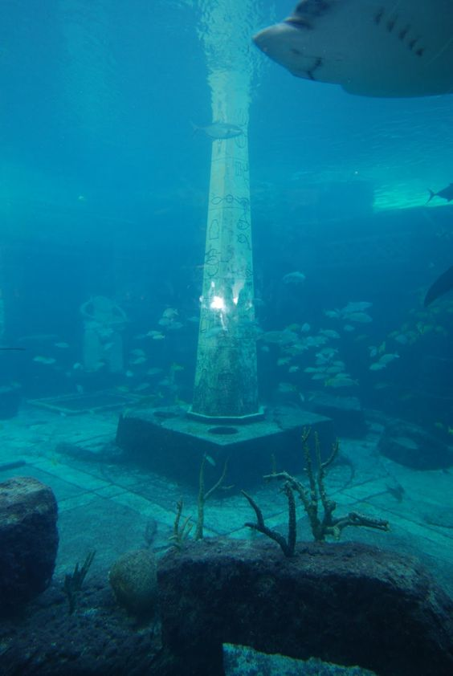
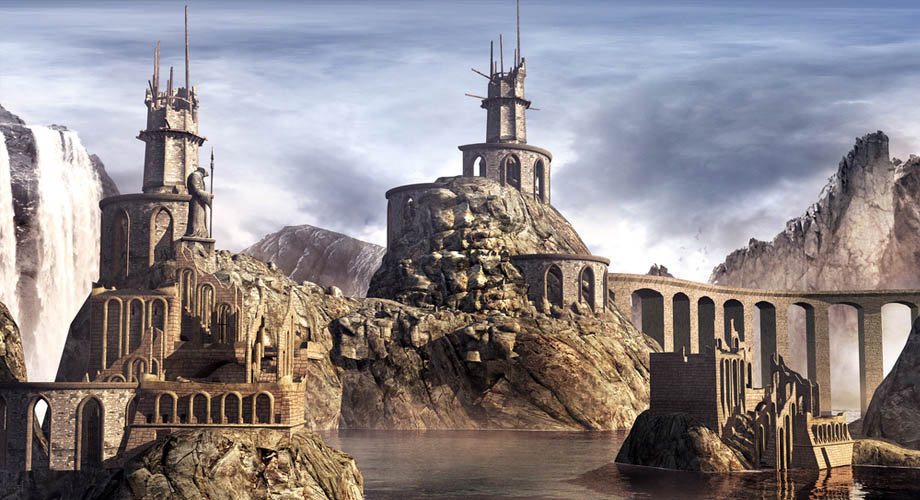
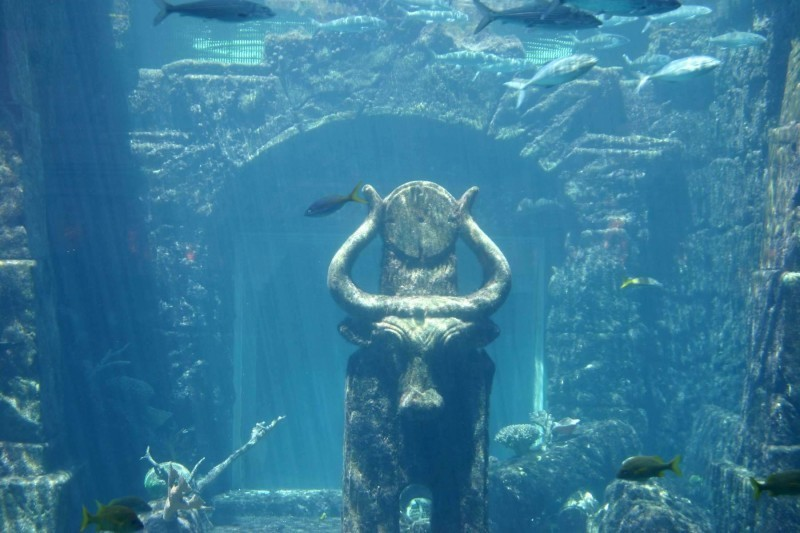
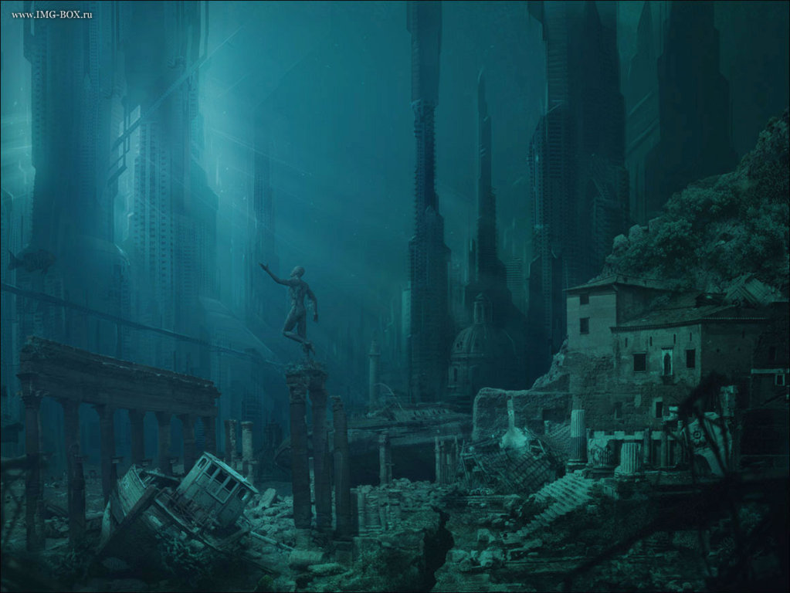
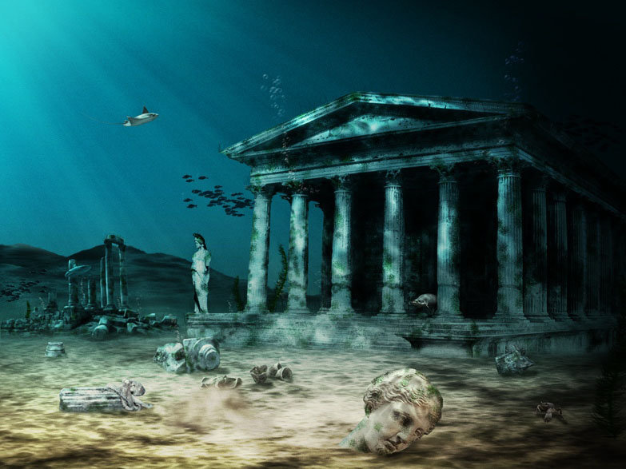

The Ancient Civilization
☰ Menu
The Lost city of Atlantis
Tale of Atlantis

(Ancient Greek: Ἀτλαντὶς νῆσος, "island of Atlas") is a fictional island mentioned within an allegory on the hubris of nations in Plato's works Timaeus and Critias, where it represents the antagonist naval power that besieges "Ancient Athens", the pseudo-historic embodiment of Plato's ideal state (see The Republic). In the story, Athens repels the Atlantean attack unlike any other nation of the (western) known world,[1] supposedly giving testament to the superiority of Plato's concept of a state.[2][3] At the end of the story, Atlantis eventually falls out of favor with the deities and submerges into the Atlantic Ocean.
Despite its minor importance in Plato's work, the Atlantis story has had a considerable impact on literature.

Plato's dialogues
Further information: Timaeus (dialogue) and Critias (dialogue)
Plato's dialogues Timaeus and Critias, written in 360 BC, contain the earliest references to Atlantis. For unknown reasons, Plato never completed Critias. Plato introduced Atlantis in Timaeus:
For it is related in our records how once upon a time your State stayed the course of a mighty host, which, starting from a distant point in the Atlantic ocean, was insolently advancing to attack the whole of Europe, and Asia to boot. For the ocean there was at that time navigable; for in front of the mouth which you Greeks call, as you say,
For all that we have here, lying within the mouth of which we speak, is evidently a haven having a narrow entrance; but that yonder is a real ocean, and the land surrounding it may most rightly be called, in the fullest and truest sense, a continent. Now in this island of Atlantis there existed a confederation of kings, of great and marvelous power, which held sway over all the island, and over many other islands also and parts of the continent.
A Latin translation of Plato's Timaeus
The four people appearing in those two dialogues are the politicians Critias and Hermocrates as well as the philosophers Socrates
The Timaeus begins with an introduction, followed by an account of the creations and structure of the universe and ancient civilizations. In the introduction, Socrates muses about the perfect society, described in Plato's Republic (c. 380 BC), and wonders if he and his guests might recollect a story which exemplifies such a society. Critias mentions a tale he considered to be historical, that would make the perfect example, and he then follows by describing Atlantis as is recorded in the Critias. In his account, ancient Athens seems to represent the "perfect society" and Atlantis its opponent,
Ancient
Some ancient writers viewed Atlantis as fictional or metaphorical myth; others believed it to be real.[27] The philosopher Crantor, a student of Plato's student Xenocrates, is cited often as an example of a writer who thought the story to be historical fact. His work, a commentary on Plato's Timaeus, is lost, but Proclus, a Neoplatonist of the fifth century AD, reports on it.[28] The passage in question has been represented in the modern literature .

Jewish and Christian
During the early first century AD, the Hellenistic Jewish philosopher Philo wrote about the destruction of Atlantis in his On the Eternity of the World, xxvi. 141, in a longer passage allegedly citing Aristotle's successor Theophrastus:[39] ... And the island of Atalantes [translator's spelling; original: Ἀτλαντίς] which was greater than Africa and Asia, as Plato says in the Timaeus, in one day and night was overwhelmed beneath the sea in consequence

Modern
Aside from Plato's original account, modern interpretations regarding Atlantis are an amalgamation of diverse, speculative movements that began in the sixteenth century.[50] Contemporary perceptions of Atlantis share roots with Mayanism, which can be traced to the beginning of the Modern Age, when European imaginations were fueled by their initial encounters with the indigenous peoples of the New World.[51] From this era sprang apocalyptic and utopian visions that would inspire many subsequent generations of theorists.[51] Most of these interpretations are considered pseudohistory, pseudoscience, or pseudoarchaeology, as they have presented their works as academic or scientific, but lack the standards or criteria. The Flemish cartographer and geographer Abraham Ortelius is believed to have been the first person to imagine that the continents were joined together before drifting to their present positions. In the 1596 edition of his Thesaurus Geographicus he wrote: "Unless it be a fable, the island of Gadir or Gades [Cadiz] will be the remaining part of the island of Atlantis or America, which was not sunk (as Plato reports in the Timaeus) so much as torn away from Europe and Africa by earthquakes and flood...
